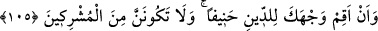

azapları yapacak “olan Allah’a taparım.”
Yâni kulluğun Allah Teâlâ’ya mahsus olduğunu, O’nun dışında câhilliğinizden
taptığınız putlara ibâdetin reddedildiğini bilin. Çünkü müşriklerin şüpheleri, putlara
tapınmayıp Allah’a kulluk etmek için bir sebep teşkil etmez. Bilâkis bu âyet dinin ne
olduğunu bildirip haber vermeye sebeptir. Aynı durum şu âyet için de söz konusudur:
“Nimet olarak size ulaşan ne varsa Allah’tandır.” (en-Nahl, 16/53) Burada da
nimetin muhataplara verildiğinin belirtilmesi, onun Allah’tan gelişinin sebebi olmayıp
aksine Allah’tan geldiğinin bildirilmesine sebeptir.
“Bana, mü’minlerden olmam emredilmiştir.” Organlarla yapılan bir cins amel olan
ibâdetten imân ve mârifete geçiş, insanın zâhirinin sâlih amellerle süslenmemesi
durumunda îmân ve mârifet nûrunun da kalbde barınamayacağına delâlet etmektedir.
Çünkü Allah Teâlâ, şeriat hükümlerini mârifetin temeli kılmıştır. Temel yok olunca
üzerine bina edilen şey de yıkılır. Yine amel mârifetin elbisesidir. Mârifet bu elbiseyi
çıkardığı zaman rüzgara karşı bırakılan bir kandil gibi ortada kalır.
İlim sudur, amel testi gibidir
Testi kırılınca su da dökülür
105. Ve: “Yüzünü hanîf olan dine çevir. Sakın ortak koşanlardır olma.”
“Ve: “Yüzünü hanîf olan” bütün bâtıl dinlerden uzak ve kendisinde hiçbir eğrilik
bulunmayan dosdoğru “dine çevir.” Yani, dinde dosdoğru hareket etmek ve farzları
yerine getirip çirkinliklerden uzak durmak konusunda çok sıkı davranmakla
emrolundum. Nitekim Kâdî Tefsiri’nde böyle denilmektedir.
Şeyhzâde Hâşiye’sinde şöyle diyor: “Burada “yüzü dine çevirme”nin nefsi tamâmen
Allah’a kulluk etmeye ve O’ndan başka her şeyden (mâsivâ) yüz çevirmeye
yönlendirmekten kinâye olduğuna işâret vardır. Çünkü herhangi bir şeyi incelemek için
ona bakan kimse, yüzünü sağa sola çevirmez, sadece o şeye yönelir. Çünkü başka bir
yöne dönse onu gözünün önünden kaybetmiş ve kastedilen bakış elde edilmemiş olur. Bu
sebepledir ki “yüzü çevirme” insanın tüm güçlerini dine çevirmesinden kinâye olarak
kullanılmıştır.”
el-Kevâşî’de şöyle denilir: “Âyetin mânâsı, mü’min ol ve amelini sadece Allah için
yap, demektir.”
Hâlis niyetle ibâdet iyidir
Yoksa içi boş posttan ne gelir
Gerek itikad gerek amel bakımından “Sakın ortak koşanlardan olma.”